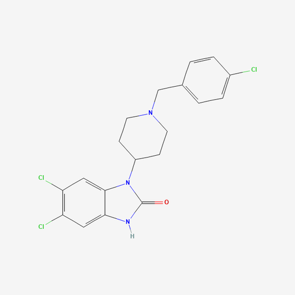

SR 17018
Biased Mu-Opioid Receptor Agonist
Overview
SR 17018 is a synthetic biased mu-opioid receptor agonist developed as a next-generation research compound. It selectively activates G-protein signaling pathways over beta-arrestin-2 recruitment at the mu-opioid receptor — a mechanism theorized to separate analgesic effects from the respiratory depression and tolerance that make traditional opioids dangerous.
Background
The opioid crisis has driven intense research into safer opioid alternatives. Traditional opioids like morphine and oxycodone activate both G-protein and beta-arrestin pathways, with the latter associated with side effects including respiratory depression (the primary cause of overdose death), constipation, and rapid tolerance development. Biased agonism emerged as a strategy to exploit only the beneficial pathway.
Mechanism
SR 17018 exhibits strong bias toward G-protein signaling with minimal beta-arrestin-2 recruitment at the mu-opioid receptor. In preclinical models, this profile translates to robust analgesia with a significantly improved respiratory safety margin. It also shows reduced reinforcement potential in animal models, suggesting a lower abuse liability than conventional opioids.
Effects
SR 17018's subjective effect profile is strikingly different from conventional opioids. Because it selectively activates G-protein pathways while bypassing beta-arrestin recruitment, it produces analgesia without the euphoric "rush" that drives opioid dependence. Users and research subjects describe the effect as functional pain relief — a reduction in suffering without the mood elevation, sedation, or reinforcing reward that characterize morphine, oxycodone, or fentanyl. This non-euphoric profile is by design: it is precisely the separation of analgesia from reward that makes SR 17018 significant as both a research tool and a potential harm reduction compound.
- Analgesia (pain relief)
- Withdrawal suppression
- Mild physical relaxation
- Tolerance reversal over time
- Euphoria / reward (minimal)
- Sedation
- Respiratory depression (significantly reduced)
- Tolerance development
- Physical dependence
Tolerance Reduction & Opioid Withdrawal
One of the most significant — and least publicized — findings in SR 17018 research is its ability to actively reverse opioid tolerance and suppress withdrawal symptoms. In preclinical studies published in PNAS (2021) and the Journal of Pharmacology, substituting SR 17018 for morphine in chronically dependent animals restored morphine's full analgesic potency within days — meaning the compound does not merely prevent further tolerance, it appears to reset the receptor-level adaptations that tolerance represents. Withdrawal onset was simultaneously prevented during this substitution period.
In harm reduction communities, SR 17018 has emerged since approximately 2024 as an off-label opioid cessation tool. Users report using it to discontinue fentanyl, heroin, methadone, buprenorphine, prescription opioids, and synthetic opioids without experiencing acute withdrawal. Typical reported protocols involve doses of 25–30 mg every 4–6 hours over one to three weeks, tapering as the underlying opioid dependence resolves. Because SR 17018 lacks euphoric reinforcement, it does not substitute one dependence for another in the way that methadone or buprenorphine maintenance can. It occupies a unique position: a compound that satisfies opioid receptors enough to prevent withdrawal while simultaneously walking tolerance back toward baseline.
Critical warning: After a course of SR 17018, opioid tolerance will be substantially reduced. Individuals who resume conventional opioids at their previous doses following SR 17018 treatment face a greatly elevated overdose risk. This has resulted in fatalities in community reports. This risk must be understood before undertaking any SR 17018 protocol.
Research
SR 17018 was developed and studied by researchers at Scripps Research and published in key pharmacology journals. Preclinical studies demonstrated effective pain relief with a therapeutic window approximately 10-fold wider than morphine in terms of respiratory depression. It remains a preclinical compound and has not yet entered human clinical trials, but represents a significant proof-of-concept for biased opioid pharmacology.
Significance
SR 17018 and related biased agonists represent one of the most promising research directions in opioid pharmacology. If the biased agonism hypothesis holds in human trials, compounds like SR 17018 could eventually offer effective pain management with dramatically reduced overdose risk — a potential breakthrough given that opioid overdose accounts for over 80,000 deaths annually in the United States. Its emerging use as an opioid cessation aid — reversing tolerance and eliminating withdrawal without substituting a new dependence — adds a second dimension to its potential significance that the formal research literature has not yet caught up with.
Legal Status
SR 17018 is a research compound and is not approved for human use by the FDA. It is not currently scheduled under the Controlled Substances Act. Access is limited to licensed research institutions. It is distinct from controlled opioids and exists solely in the preclinical research domain at this time.
Community
Join the SR 17018 subreddit for ongoing discussion, research updates, and community experience reports.
Visit r/SR17018 →This page is for educational purposes only. Nothing here constitutes legal, medical, or therapeutic advice. Know your local laws.